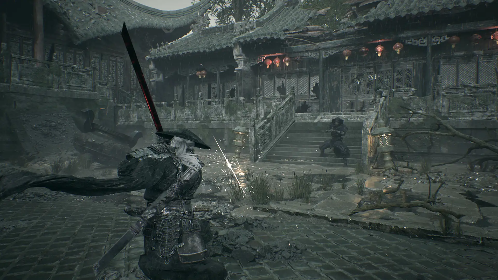
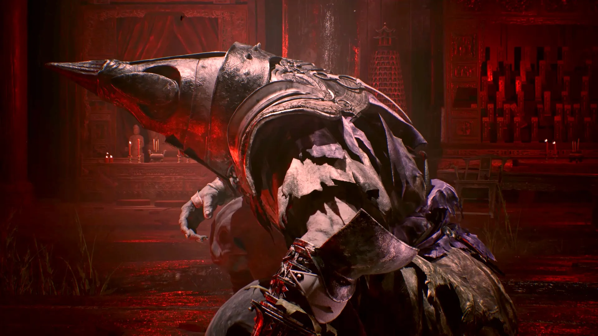
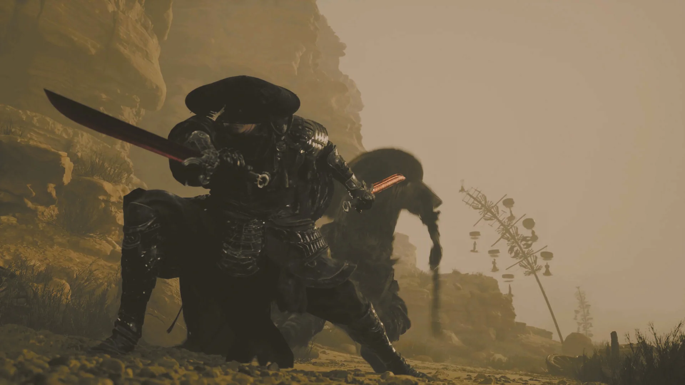

Start in Performance mode. Digital Foundry recommends it on both PS5 and PS5 Pro because it protects response time in a game built on parries, and it targets 60 fps from a dynamic 900p–1080p internal image. (Digital Foundry, 2026-10-28)
Balanced targets 40 fps and needs 120 Hz output; pacing stayed uneven even with VRR forced. Graphics targets 30 fps at roughly 1440p internal, and the cap can break into judder. (Digital Foundry, 2026-10-28)
PS5 Pro keeps the same three targets and adds a ray-tracing toggle for shadows, reflections and global illumination; reflections gained most, at no major frame-rate cost. (Digital Foundry, 2026-10-28)
Install: Sony's public store page does not list a PS5 install size. The PC build requires 145 GB of SSD space. Price: $59.99 Standard, $69.99 Digital Deluxe. (PlayStation Store US, checked 2026-11-09; Steam, checked 2026-11-09)
Scores: Metacritic lists 88 on PC from 52 reviews and 86 on PS5 from 48; OpenCritic sits at 89. (Metacritic, checked 2026-11-09; OpenCritic, checked 2026-11-09)
A finishing strike with the combat HUD visible; short and silent, so read it as a look at the frame, not a frame-rate test. Footage: official capture, 2026-11-09.
PS5 performance and graphics modes
The PlayStation Store publishes no mode table, so these figures come from Digital Foundry's launch-week test of the retail build. Internal resolutions are dynamic, which is why they read as ranges. (Digital Foundry, 2026-10-28)
| Mode | Internal resolution | Frame-rate target | Notes |
|---|---|---|---|
| Performance | About 900p–1080p, dynamic | 60 FPS | Upscaled output; held the target in sampled areas with brief dips. |
| Balanced | Between the other two, closer to Performance | 40 FPS; 120 Hz output | On both consoles; pacing stayed uneven even with VRR forced. |
| Graphics | About 1440p, dynamic | 30 FPS | Better shadows; the cap occasionally breaks into judder. |
| PS5 Pro | PSSR reconstruction; counts vary | Same three targets | Adds a ray-tracing toggle for shadows, reflections and GI; no separate mode. |
Average frame rate is half the story. Performance sat near 60 fps with brief dips, Balanced delivered 40 unevenly even with VRR on, and Graphics held 30 until the cap slipped. Push Square also reported drops in some PS5 Pro boss fights; patches can move any of it. (Digital Foundry, 2026-10-28; Push Square, 2026-10-26)

Parry timing depends on reaction frames, which is why Performance is the default pick. Art: official capture, 2026-11-09.
PS5 or PC: which version to buy
PC carries ray tracing and path tracing options, and path tracing can cost more performance than the image returns below the top GPU tier. PS5 has no path-tracing option; PS5 Pro adds a ray-tracing toggle, not a path-tracing mode. (Digital Foundry, 2026-10-28; PlayStation, checked 2026-11-09)
Everything else is the same game on both. Linear levels, muddled storytelling and a steep opening boss are design decisions, not port differences. (Push Square, 2026-10-26)
Buy for hardware and patience for menus. A mid-range PC, or no interest in tuning, points at PS5; a high-end card and an evening to spare on settings points at PC.
Buy order for most players:
- PS5 — pick Performance and stop thinking about it.
- PC with ray tracing off — the safe default.
- PC with path tracing on — only with real headroom; check frame times, not averages.

Interior lighting is where ray tracing earns its cost on PC; the console preset is fixed. Art: official capture, 2026-11-09.
DualSense: adaptive triggers and haptics
PlayStation's feature copy confirms adaptive triggers and haptic feedback, tying resistance to bowstring draws and cannon charges, and haptics to blade clashes and hammer strikes. (PlayStation, checked 2026-11-09)
That is not a full mapping: it does not say whether every stance adds trigger travel, whether parries get a distinct cue, or whether either effect has an intensity slider. Both features exist; the details are untested. (PlayStation, checked 2026-11-09)

Stance switching is the mechanic most likely to use trigger resistance; Sony does not say which attacks do. Art: official capture, 2026-11-09.
Install size and load times
Sony's public PlayStation Store page for Phantom Blade Zero does not list a PS5 install size, so this page does not quote one. The PC build requires 145 GB of available SSD space per Steam. Patches can change storage needs on either platform. (PlayStation Store US, checked 2026-11-09; Steam, checked 2026-11-09)
No repeatable stopwatch figures for death-to-retry or chapter transitions appeared in the reviews checked. They cover frame rate without publishing load timings, so no seconds are quoted. (Push Square, 2026-10-26; Digital Foundry, 2026-10-28)
Traversal between areas streams continuously here; no measured transition times exist for it. Footage: official capture, 2026-11-09.
Price and discounts
US pricing at capture: $59.99 Standard, $69.99 Digital Deluxe. Neither carried a discount on 2026-11-09. (PlayStation Store US, checked 2026-11-09)
The digital launch landed October 29, 2026, October 28 in US Pacific time. A physical PS5 edition is announced for 2027 without a date or price, so the disc is not a reason to wait. (PlayStation Store US, checked 2026-11-09; GamesRadar, 2026-10-22)
Phantom Blade Zero PS5 FAQ
Is Phantom Blade Zero 60fps on PS5?
Performance mode targets 60 fps on both consoles and mostly held it in Digital Foundry's sampled areas, with brief dips; Push Square saw drops in some PS5 Pro boss fights. Treat 60 as a target, not a lock. (Digital Foundry, 2026-10-28; Push Square, 2026-10-26)
Does it have a performance mode?
Yes. Performance targets 60 fps, Balanced 40 fps with 120 Hz output, Graphics 30 fps. Balanced had uneven pacing in testing, even with VRR on. (Digital Foundry, 2026-10-28)
Is it on PS5 Pro?
Yes. PS5 Pro Enhanced support is listed on the PlayStation Store; the Pro adds a ray-tracing toggle for shadows, reflections and global illumination on top of the same three modes. (PlayStation, checked 2026-11-09)
Should I buy the PS5 or PC version?
PS5 for fixed presets and no tuning; Performance covers responsiveness. PC for a strong GPU that wants ray tracing and path tracing, accepting that the heaviest settings cost frames.
How big is the PS5 install?
Not listed. Sony's public store page does not state a PS5 install size, and this page does not quote an unlisted figure. The PC build lists 145 GB of SSD space. (PlayStation Store US, checked 2026-11-09; Steam, checked 2026-11-09)